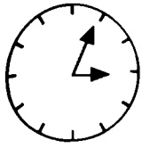
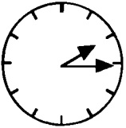
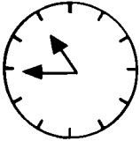
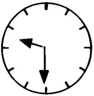

Revision et notes
1 - O pretérito.
Este tempo expressa dois conceitos diferentes, o passado simples e o presente perfeito. Em outras palavras, o francês não faz diferença entre "comprado" e "eu comprei", tornando assim a vida muito mais simples para nós! Você já se deparou com o pretérito antes. Ele é formado com o tempo presente do avoir (que se torna um "auxiliar") e o particípio passado do verbo que desejamos usar.
Os particípios do passado são formados assim:
verbos como acheter com é → acheté
verbos como finir com i → fini
verbos como vendre com u → vendu
Elle a vendu sa voiture → Ela vendeu seu carro.
Nous avons fini de manger → Acabamos de comer.
Ils ont acheté un magnétoscope → Eles compraram um videocassete.
A forma negativa é simples: usamos ne antes do auxiliar e pas depois dele.
Nous n'avons pas fini ; ils n'ont pas acheté ; elle n'a pas vendu.
Est-ce qu'elle a acheté cette nouvelle imprimante ? - Ela comprou (ou comprou) essa nova impressora?
Certos verbos têm particípios irregulares: alguns você vai pegar naturalmente, outros você pode ver no Apêndice no final do livro. Aqui estão dois verbos comuns para começar: j'ai eu - eu (já) tive; il a dit - ele (já) disse.
NOTA: O francês também tem um passado "histórico" que tem exatamente o mesmo uso que o passado que acabamos de ver, mas é basicamente uma forma literária e não se encontra na conversa ou na escrita moderna.
2 - Quelle heure est-il ? - Que horas são?
Para dizer a hora, é preciso primeiro anunciar a hora mais próxima. Por exemplo, 3 da tarde.
II est trois heures.
Depois, o número de minutos passados, ou seja, 5.
II est trois heures cinq ...
Simples! (Sem conjunção entre a hora e o minuto).
A hora mais próxima é 4.
Il est quatre heures...
Agora, anunciamos o número de minutos que faltam: 20.
II est quatre heures moins vingt (lit. "menos 20"):
Para 15 e 45 minutos, dizemos:
II est deux heures et quart. (Note o et) ou un quart
II est onze heures moins le quart.
Para meia hora, dizemos:
II est neuf heures et demie.
(Entretanto, uma meia hora é escrita une demi-heure, sem um "e"; demi nunca concorda com seu substantivo antes de um hífen). Para anúncios públicos (trens, horários de cinema, programas de televisão, etc.), é utilizado o relógio de 24 horas. Veremos isso mais tarde.
3 - Um ponto importante da gramática é que os negativos franceses são sempre compostos de duas partes: o ne e outra partícula.

| Índice Francês |
|||||||||
| 01 | 02 | 03 | 04 | 05 | 06 | 07 | 08 | 09 | 10 |
| 11 | 12 | 13 | 14 | 15 | 16 | 17 | 18 | 19 | 20 |
| 21 | 22 | 23 | 24 | 25 | 26 | 27 | 28 | 29 | 30 |
| 31 | 32 | 33 | 34 | 35 | 36 | 37 | 38 | 39 | 40 |
| 41 | 42 | 43 | 44 | 45 | 46 | 47 | 48 | 49 | 50 |
| 51 | 52 | 53 | 54 | 55 | 56 | 57 | 58 | 59 | 60 |
| 61 | 62 | 63 | 64 | 65 | 66 | 67 | 68 | 69 | 70 |
| 71 | 72 | 73 | 74 | 75 | 76 | 77 | 78 | 79 | 80 |
| 81 | 82 | 83 | 84 | 85 | 86 | 87 | 88 | 89 | 90 |
| 91 | 92 | 93 | 94 | 95 | 96 | 97 | 98 | 99 | 100 |
| 101 | 102 | 103 | 104 | 105 | |||||